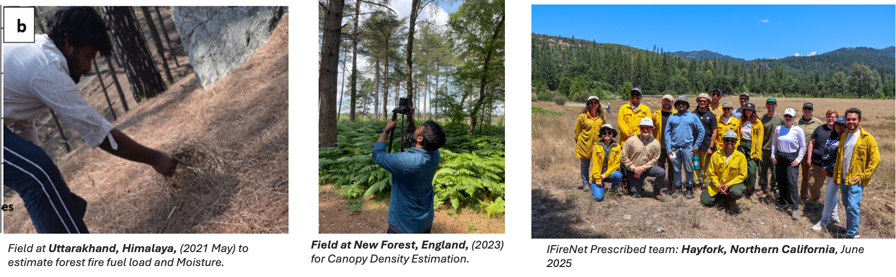

Postdoctoral Scholar
Dr. Somnath Bar
Department of Civil and Environmental Engineering
University of California, Irvine, US
University of California, Irvine, US
1,012+ citations · h-index 14
A passionate Geoinformatics and Earth Observation enthusiast, with a PhD in Himalayan forest fire and its impact on forest degradation and regional atmospheric pollution. Dr. Bar investigates the intricate relationship between terrestrial and atmospheric interactions, contributing to our understanding of long-term climate changes.

Working Projects
- Development of fundamental framework on wildfire through the lens of Remote Sensing, geospatial and computational dynamics.
- Vegetation growth modelling using Remote Sensing and climatic and non-climatic variables.